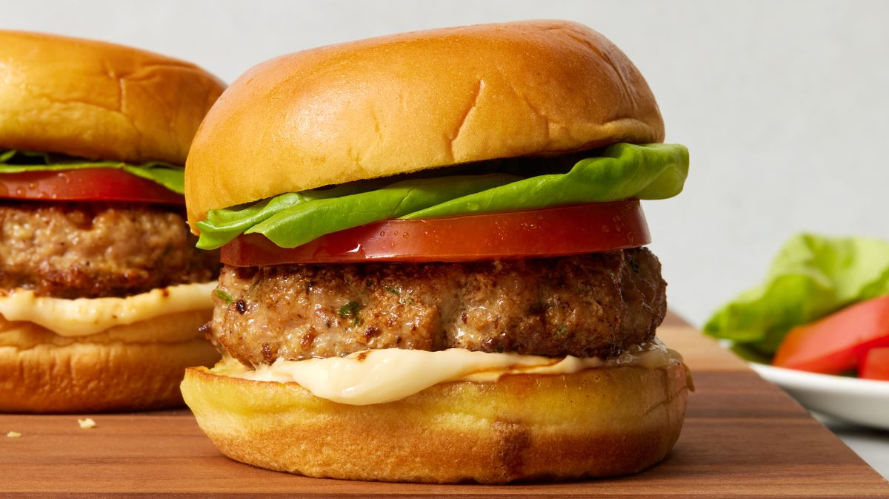

STEP 1
Tip 500g beef mince into a bowl with 1 small diced onion and 1 egg, then mix.

STEP 2
Divide the mixture into four. Lightly wet your hands. Carefully roll the mixture into balls, each about the size of a tennis ball.
STEP 3
Set in the palm of your hand and gently squeeze down to flatten into patties about 3cm thick. Make sure all the burgers are the same thickness so that they will cook evenly.
STEP 4
Put on a plate, cover with cling film and leave in the fridge to firm up for at least